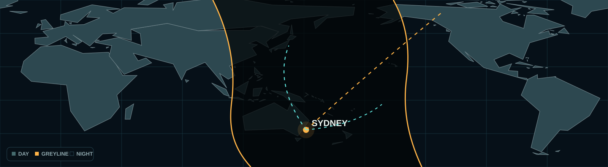

Sydney greyline & listening paths

Best buttons to try right now
Frequency library
Primary U.S. military High Frequency Global Communications System channel. It links military aircraft and ground stations over long distances. Listen for coded Emergency Action Messages, callsigns, radio checks and occasional aircraft requests.
Listen to military HFGCS via Twente →Lower-frequency U.S. military HFGCS companion to 11,175 kHz. Often improves as a propagation path moves into darkness. Expect the same style of coded messages, station calls and aircraft checks.
Listen to military HFGCS via Twente →Higher U.S. military HFGCS channel used when daylight supports 15 MHz propagation. It may be silent for long stretches, then carry a short coded message or aircraft/ground-station call.
Listen to military HFGCS via Twente →Low-band U.S. military HFGCS frequency for fully dark paths. Most useful late at night, with more atmospheric noise. Listen for brief coded voice traffic, callsigns and radio checks.
Listen to military HFGCS via Twente →VMC Charleville is an Australian Bureau of Meteorology marine-weather voice service. It carries scheduled coastal and high-seas forecasts and warnings for vessels around eastern Australian waters.
Listen for BoM marine weather →VMW Wiluna is the Bureau of Meteorology voice service for western and north-western Australian waters. Expect scheduled marine forecasts, observations and weather warnings.
Listen for BoM marine weather →WWV in Colorado and WWVH in Hawaii transmit precise time and frequency standards. Listen for second ticks, tones and spoken UTC announcements; from Sydney, WWVH is often the more practical path.
Listen for WWV / WWVH time signals →RNZ Pacific carries New Zealand news, current affairs, sport and Pacific regional programming. It is a comparatively easy broadcast target from Sydney, but its frequency changes with the UTC schedule and season.
Check the current RNZ Pacific schedule →Emergency & local listening desk
The worldwide civil-aircraft emergency frequency. Used for Mayday/distress calls, lost-aircraft contact and emergency-locator beacon homing. A scanner feed may not monitor Guard continuously.
Browse NSW aviation/scanner feeds →The military counterpart to 121.5 MHz, used for aviation distress and emergency calling. It is UHF, not shortwave/HF, and is outside the IC-705 receive range.
Find a public UHF aviation feed →International marine distress, urgency, safety and calling channel. Expect Mayday, Pan-Pan, Sécurité and initial vessel-to-vessel or vessel-to-shore calls before traffic moves elsewhere.
Browse NSW marine/scanner feeds →Public NSW Rural Fire Service feed for the local district.
Open live feed →Public community scanner portal for supported NSW services.
Open RDIO →Official local information source online and on radio.
Open ABC Sydney →